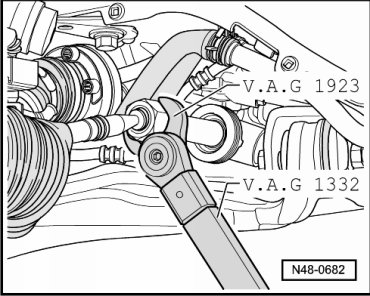
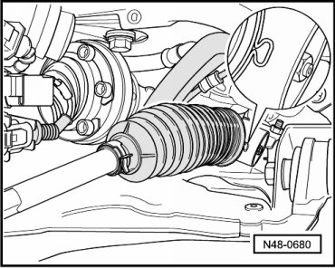
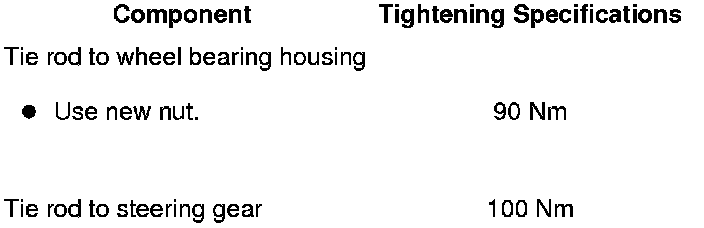

Tie Rod
Tie Rod
Special tools, testers and auxiliary items required
• Torque wrench (VAG 1332)
• Box end wrench insert (VAG 1923)
• Ball joint puller (T10187)
• Locking pliers (VAS 6199)
Removing
CAUTION!
Before starting work, stabilizer bars must be coupled in vehicles with separable stabilizer bars. Otherwise, there is the danger of injury caused by unintentional separation.
The left and right tie rods are identical.
They can be removed and installed with the steering gear in the vehicle.
- Remove front wheel.
- Press off tie rod from wheel bearing housing.

- Clean outside of power steering gear in area of boot.
- Open clamp and push back boot.
- Remove tie rod using open-jaw torque wrench insert (VAG 1923).

Installing
Installation is the reverse of removal, with special attention to the following:
- Tighten tie rod using open-jaw torque wrench insert (VAG 1923).
- Check boot for wear (slits, cracks) and check sealing surfaces of boot for dirt.
- Install bellows and clamp.
• Only use original clamps.
- Tighten clamp using locking pliers (VAS 6199) as far as shown in illustration.

Further installation is in the reverse sequence to removal.
- After installation, a vehicle alignment must be performed. Refer to --> [ Wheel Alignment ] Wheel Alignment.
- Perform basic setting for steering angle sensor (G85).
Tightening Specifications
